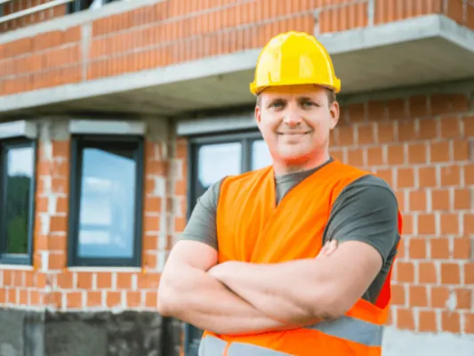
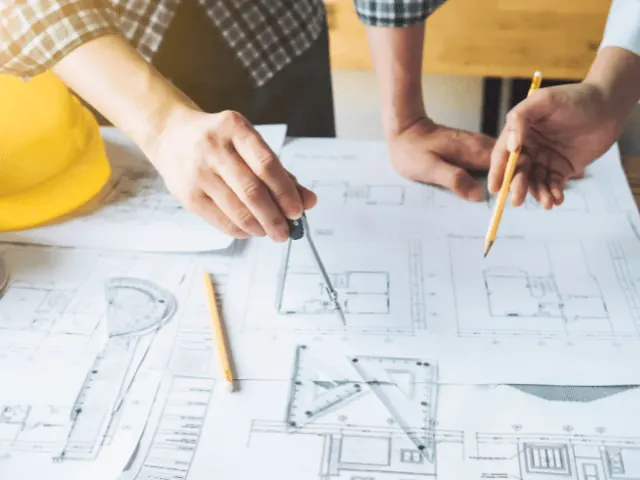
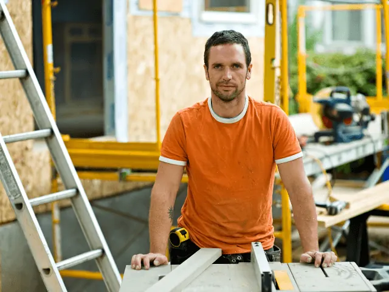
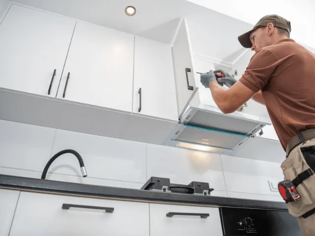

Vind de juiste aannemer voor het verduurzamen van jouw woning in Nijmegen
Gepubliceerd op 15 mei 2023, bijgewerkt op 26 februari 2024

Wat doet een aannemer precies?
Een aannemer is iemand die verantwoordelijk is voor het bouwen of renoveren van gebouwen, huizen of infrastructurele projecten, zoals wegen en bruggen. De aannemer coördineert het hele bouwproces, vanaf de planning tot aan de oplevering van het project.
Hierbij stuurt hij ook verschillende onderaannemers en vakmensen aan, zoals metselaars, timmermannen, loodgieters en elektriciens. De aannemer is verantwoordelijk voor het naleven van de planning en het budget, en zorgt ervoor dat het project veilig en volgens de geldende regelgeving wordt uitgevoerd.
Hoe kan een aannemer je helpen bij het verduurzamen van je huis?
Een aannemer kan je op verschillende manieren helpen bij het verduurzamen van je huis, en we nemen een aantal voorbeelden met je door:
- Advies en planning: ten eerste kan een aannemer kan je adviseren over de verschillende mogelijkheden om je huis te verduurzamen. Hij kan samen met jou de mogelijkheden en opties bespreken en een plan opstellen om jouw huis duurzamer te maken.
- Uitvoering van energiebesparende maatregelen: hij kan de energiebesparende maatregelen voor je huis uitvoeren. Bijvoorbeeld het installeren van isolatie, zonnepanelen, een warmtepomp, HR++-glas of andere energiebesparende maatregelen.
- Onderhoud en reparatie: hij kan ook het onderhoud en reparatie van de verduurzamingsmaatregelen uitvoeren. Zo kan hij bijvoorbeeld de zonnepanelen of de warmtepomp controleren en onderhouden, zodat deze optimaal blijven functioneren.
- Subsidies en financiering: een aannemer kan je helpen om subsidies en financieringsmogelijkheden voor de verduurzaming van je huis te vinden, en samen met jou te regelen. Zo kun je wellicht gebruikmaken van de landelijke of regionale subsidieregelingen of financieringsmogelijkheden voor energiebesparende maatregelen.
Maak gebruik van de kennis en expertise van een expert, zoals een aannemer wanneer je eraan denkt om je woning duurzamer te maken. Uiteindelijk scheelt het je kosten.

Wat kun je zelf doen aan de verduurzaming in huis?
Naast dat je veel baat hebt bij een aannemer zijn er ook dingen die je zelf kunt doen. We hebben hier een aantal tips voor je:
- Kies voor ledverlichting: vervang je gloei- en halogeenlampen door ledlampen. Deze zijn energiezuiniger en gaan veel langer mee.
- Beperk het waterverbruik: gebruik simpelweg minder water en plaats waterbesparende douchekoppen en kranen, en vang regenwater op om te gebruiken voor de tuin.
- Verminder het gebruik van plastic: kies voor herbruikbare boodschappentassen, gebruik geen wegwerpplastic en scheid je afval zorgvuldig. En lever plasticflessen netjes in.
- Eet minder vlees: de productie van vlees is erg belastend voor het milieu. Door minder vlees te eten, kun je dus ook bijdragen aan een duurzamere wereld. Er zijn tegenwoordig voldoende vleesvervangers op de markt, dus het moet te doen zijn.

Hoe vind je een goede aannemer in Nijmegen?
Het kiezen van de juiste aannemer is een belangrijke eerste stap in elk bouwproject. Het vinden van een betrouwbare en professionele aannemer kan het verschil maken tussen een succesvol project en een rampzalig fiasco. Maar hoe kies je de juiste aannemer voor jouw project?
Een goede eerste stap is het vragen van aanbevelingen aan vrienden, familie en buren. Op deze manier kun je ervaringen horen van mensen die al eens met een aannemer hebben samengewerkt. Ook kun je online beoordelingen en recensies bekijken om een beeld te krijgen van de kwaliteit van het werk van verschillende aannemers.
Zodra je een aantal potentiële aannemers hebt gevonden, is het belangrijk om hun referenties te controleren. Vraag de aannemer om referenties van eerdere klanten en neem contact met hen op om te horen of ze tevreden waren met het werk dat hij bij hen heeft geleverd. Ook is het goed om te controleren of de aannemer de juiste licenties en verzekeringen heeft, handig voor het geval er iets misgaat en er onverwachte kosten bijkomen.
Een ander belangrijk aspect om te overwegen bij het kiezen van een aannemer is hun ervaring. Bekijk het portfolio van de aannemer om te zien of hij of zij ervaring heeft met projecten vergelijkbaar met jouw project.
Als je eenmaal een geschikte aannemer hebt gevonden, is het belangrijk om duidelijke afspraken te maken. Zorg ervoor dat alle afspraken schriftelijk worden vastgelegd in een contract voordat het project begint. Maak duidelijke afspraken over de kosten, het tijdschema en de verwachtingen voor het project. Voorkom verassingen.
Er zijn heel veel aannemers in Nijmegen en er is er altijd wel een die goed bij jouw project past en waarmee je een goede klik kunt hebben, want je zit vaak een langere periode met elkaar opgescheept.

Overzicht aannemers in Nijmegen
Aannemingsbedrijf Fokker
Aannemingsbedrijf Fokker in Nijmegen is uw partner voor kwalitatieve en duurzame bouwprojecten. Met hun ruime ervaring en toewijding aan vakmanschap, leveren ze oplossingen die esthetisch aantrekkelijk en milieuvriendelijk zijn. Of het nu gaat om een renovatie, uitbreiding of een nieuw bouwproject, Aannemingsbedrijf Fokker streeft altijd naar het hoogste niveau van klanttevredenheid. Hun team van professionals hanteert een persoonlijke aanpak, zorgt voor een vlotte communicatie en levert resultaten die voldoen aan uw verwachtingen. Kies voor Aannemingsbedrijf Fokker in Nijmegen voor uw volgende duurzame bouwproject.
Gommers
Aannemingsbedrijf Gommers in Nijmegen heeft een reputatie opgebouwd voor uitmuntend vakmanschap en toewijding aan duurzaam bouwen. Met een team van ervaren professionals, leveren ze hoogwaardige renovaties en bouwprojecten die zowel esthetisch aantrekkelijk als energiezuinig zijn. Ze luisteren aandachtig naar uw wensen, stellen realistische planningen op en zorgen ervoor dat elk project binnen de afgesproken termijn en budget wordt voltooid. Aannemingsbedrijf Gommers staat voor betrouwbaarheid, kwaliteit en een persoonlijke aanpak. Kies voor Gommers in Nijmegen voor uw volgende duurzame bouwproject en ervaar hun professionaliteit zelf.
De Gilde Aannemers
De Gilde Aannemers in Nijmegen staan bekend om hun uitmuntende vakmanschap en toewijding aan duurzaamheid. Ze begrijpen dat elke bouw- of renovatieproject uniek is en benaderen elk project met een op maat gemaakte aanpak. Hun ervaren team streeft ernaar om energiezuinige en milieuvriendelijke oplossingen te leveren die voldoen aan uw specifieke behoeften. Of het nu gaat om een kleine renovatie of een groot bouwproject, De Gilde Aannemers zorgen voor een naadloos proces van begin tot eind. Kies voor De Gilde Aannemers in Nijmegen voor een betrouwbare en duurzame bouwervaring.
Jansen en van Ralen B.V.
Jansen en Van Ralen BV in Nijmegen zijn ware meesters in het vak van duurzaam bouwen. Met een uitgebreide ervaring en een toegewijd team, leveren ze hoogwaardige bouw- en renovatieprojecten op maat. Ze begrijpen het belang van duurzaamheid en implementeren de nieuwste energiezuinige technieken in hun werk. Of het nu gaat om een kleine verbouwing of een groot bouwproject, Jansen en Van Ralen BV zorgen voor een vlotte uitvoering en een eindresultaat dat voldoet aan de hoogste kwaliteitsnormen. Kies voor Jansen en Van Ralen BV in Nijmegen voor een zorgeloze en duurzame bouwervaring.
OVERZICHT AANNEMERSBEDRIJVEN
BEKIJKAannemers en verbouw in Nijmegen
Zin om te beginnen? In onze bedrijvengids vind je alle 52 aannemers in Nijmegen, met openingstijden, kenmerken en een kaart.
Bekijk alle 52 aannemers in Nijmegen
Heb je zelf een aannemer? Laat je hier uitlichten.